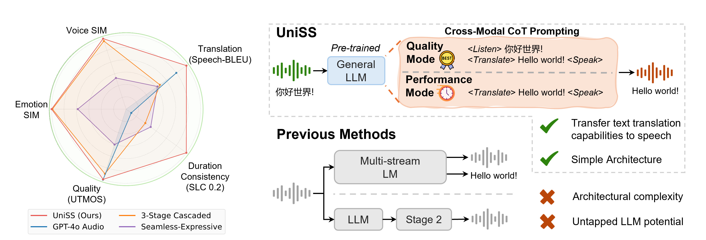
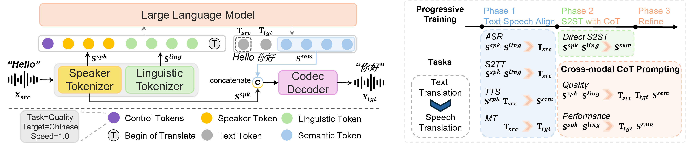

UniSS:
Unified Expressive Speech-to-Speech Translation with Your Voice
UniSS is a unified single-stage S2ST framework that achieves high translation fidelity and speech quality, while preserving timbre, emotion, and duration consistency.
Contents
Overview of UniSS (S2ST)

Figure 1. UniSS integrates pre-trained text LLMs and transfers their translation capabilities to the speech domain. UniSS outperforms both end-to-end S2ST systems and cascaded systems on translation fidelity, expressiveness preservation, duration consistency and speech quality
Method Overview

Figure 2. Overview of UniSS architecture, cross-modal CoT prompting and 3-phase progressive training.
Zero-shot S2ST Samples
All samples are generated by UniSS (Quality mode) directly without fine-tuning.
| Language | Info | Source | Inference Result |
|---|---|---|---|
| EN-ZH | Benedict Cumberbatch |
So maybe, that you would prefer to forego my secret rather than consent to becoming a prisoner here for what might be several days.
|
所以，也许你宁愿放弃我的秘密，也不愿同意在这里成为囚犯，哪怕可能要待上好几天。
|
| Rick Sanchez |
Yeah that's the difference between you and me, Morty. I never go back to the carpet store.
|
是的，这就是你和我的区别，莫蒂。我从不回地毯店。
|
|
| From Seed-TTS's demo |
Some call me nature, others call me mother nature. I've been here for over four point five billion years—twenty two thousand and five hundred times longer than you.
|
有些人叫我自然，另一些人叫我大自然母亲。我在这里已经超过四十五亿年了，比你们长二万两千五百倍。
|
|
| From Seed-TTS's demo |
A chance to leave him alone, but... No. She just wanted to see him again. Anna, you don't know how it feels to lose a sister. Anna, I'm sorry, but your father asked me not to tell you anything.
|
我本想让他一个人待着，但是……不。她只是想再见到他一次。安娜，你不知道失去一个妹妹是什么感觉。安娜，对不起，但你的父亲让我不要告诉你任何事情。
|
|
| From Seed-TTS's demo |
Are you familiar with it? Slice the steak and place the strips on top, then garnish with the dried cranberries, pine nuts, and blue cheese. I wonder how people rationalise the decision?
|
你熟悉这个吗，把牛排切好，然后将肉条放在上面，再用干蔓越莓、松子和蓝纹奶酪装饰。我想知道人们是如何合理化这个决定的。
|
|
| Steve Jobs |
It was beautiful, historical, artistically subtle in a way that science can't capture, and I found it fascinating.
|
它美丽、历史感十足，艺术上微妙之处难以用科学手段捕捉到，我对此感到着迷。
|
|
| Donald Trump |
In short, we embark on a mission to make America great again, for all Americans.
|
简而言之，我们开启了一项使命，为所有美国人让美国再次伟大。
|
|
| ZH-EN | 贾玲 |
跟观众分享我人生的感悟，因为我们都是只活一次，我们也都是第一次活，我们也不知道该怎么活着。
|
Sharing my life's insights with the audience, because we are all living this once, and we are also living for the first time. We don't know how to live.
|
| 鲁豫 |
就你就看到一个一个数字，然后尤其是你有一段明显感到处于一个平静期的时候，你会想，哦，数字好冷静，但冷静的背后，那种。
|
You will see numbers one by one, and especially when you have a period that clearly indicates you are in a calm state. You might think, oh, the numbers are so calm, but there's something behind that calmness.
|
|
| 哪吒 |
别烦我，让我一个人安静地死去。
|
Leave me alone, let me die in peace.
|
|
| 杨澜 |
但是你的成本已经全部都进去了。
|
But your costs have already all gone in.
|
|
| 徐志胜 |
有一次我跟我的三个领导坐电梯去吃饭，大家可能知道啊在电梯里有一项潜规则是谁的地位越低，谁就应该按这个电梯按键，但我当时就认为是谁离得近谁按。
|
Once, I was in an elevator with three of my bosses to go have a meal. You might know that there's an unwritten rule in the elevator: the person with the lowest status should press the button for the elevator. But at that time, I thought whoever was closest should press it.
|
|
| From Seed-TTS's demo |
皇上请三思，皇后娘娘都是为了万岁爷着想，请万岁爷不要辜负了娘娘的一片苦心。
|
Please reconsider, Your Majesty. The Empress is thinking for the Emperor's sake. Please do not let Her Majesty's earnest efforts be in vain.
|
|
| From Seed-TTS's demo |
下周开始就不能开车上班了，因为亚运会要限行，真不方便呀。
|
Starting next week, I won't be able to drive to work because of the traffic restrictions during the Asian Games. It's really inconvenient.
|
Emotion-preserved S2ST Samples
All samples are generated by UniSS (Quality mode) directly without fine-tuning.
| Emotion | Source | Inference Result |
|---|---|---|
| Angry | ||
| Happy | ||
| Sad | ||
| Natural |